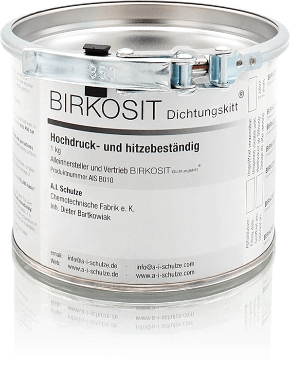

PRODUCT REVIEW
Product description

Birkosit
Birkosit is the only single product which can withstand temperatures of up to 900 degrees C. The product is free from the substances which have a harmful impact on the environment in accordance with the highest safety and quality standards. Birkosit is mainly used in gas turbines, steam turbines, generators, compressors, expanders, valves, pumps, gear units and marine engines.
JOB OPPORTUNITIES
Job openings
Follow sreeblogging for regular updates on job opportunities for all positions in India and abroad. Banks, Information Technology, Software Engineers, Government Sector, Corporate Companies and many more.
CAREER GUIDANCE
Improve your career by upskilling
We should always think about what we want to do when we are picking up a career. When we are writing a resume, it is important that the skills and experience sections correspond with what we want to be doing with our life. For example, if you have been working as a marketing assistant for the past few years and would like to be building your skills in digital marketing instead of advertising, then marketing should be the focus of your resume and not advertising.
Resume writing tips:
-Don’t just list out your jobs or duties; mention why you are qualified for the position in general.
-A one-page resume is appropriate for most positions, but two pages will give you more space.
-It’s best if you can include measurable success such as conversion rates or revenue growth.